ЖИВОЙ РЕПОРТАЖ
Яблочнаяистория
Куда отправляют тонны собранных плодов, как их хранят и какую продукцию из них производят?
Яблоня — одно из главных деревьев в белорусском саду. Из её плодов готовят разные вкусности, выжимают сок, закатывают пюре, варенье, сушат и мочат. В этом году сады радуют щедрым урожаем.
Поэтому перерабатывающие предприятия работают в напряжённом режиме, ведь важно успеть сохранить и переработать собранные плоды.
Упасть
негде
В фермерском хозяйстве «Бугагроинвест» Каменецкого района яблочная уборка начинается в августе и длится до середины ноября. В нынешнем сезоне работы много. После почти безурожайного прошлого года яблони снова хорошо плодоносят.
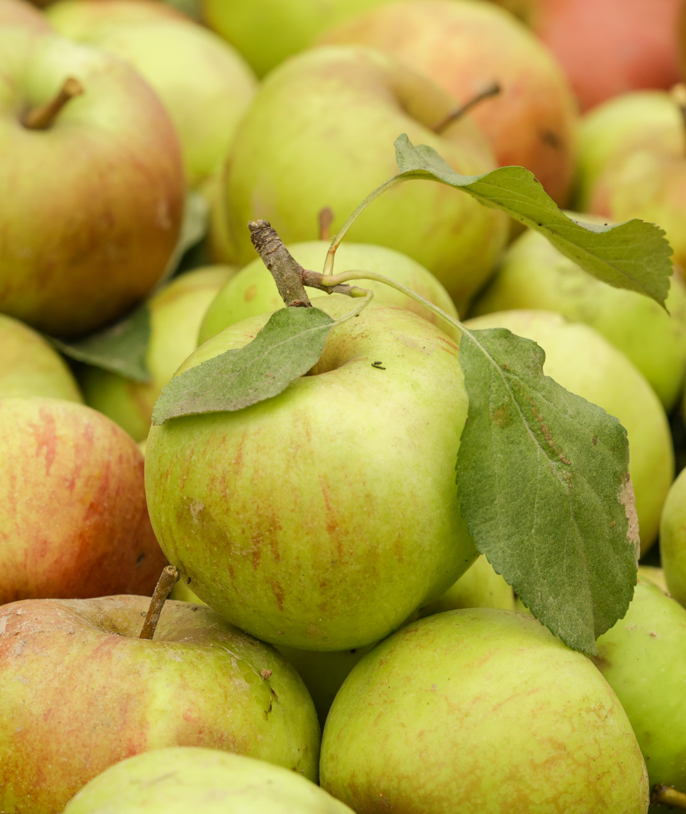
Сад занимает 110 гектаров. Сорта здесь подобраны так, чтобы поспевать друг за другом: в августе начинают с ранних «пироса» и «делькорфа», позже наступает черёд «хани крисп», «голден делишеса», «лигола», «ред чифа», «глостера», «айдареда» и «альвы». Поэтому уборка растягивается на несколько месяцев — одни яблоки уже сняли, другие ещё дозревают. В разгар сезона в саду работают около 60–70 человек.
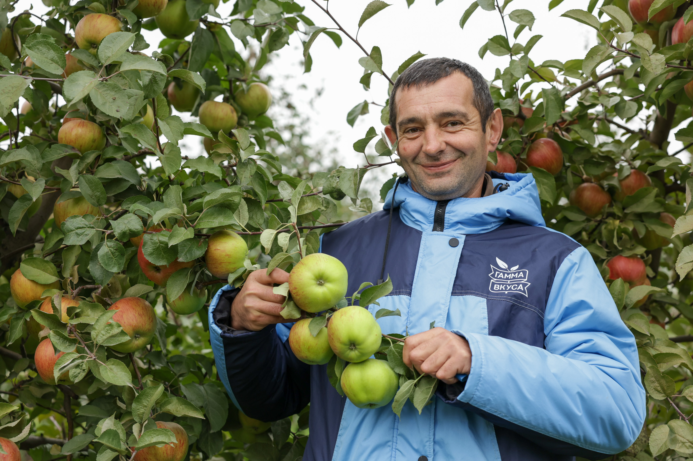
«Ранние сорта начали снимать примерно с 3 августа, поздние — с 14 сентября. Рассчитываем закончить к середине ноября. Работаем с платформ: четыре используются для сбора яблок наверху, ещё четыре — внизу. На каждом тракторе размещается по семь контейнеров».
Первые деревья здесь посадили в 2012 году. Тогда восемь гектаров отвели под белорусские саженцы. За садом ухаживали, ждали, когда он начнёт давать хороший урожай, но через пять лет получили около пяти тонн яблок с гектара. Позднее попробовали польские саженцы. Они уже на третий год дали около 30 тонн с гектара. После такого сравнения руководитель хозяйства Юрий Федкович решил заменить первые посадки.
«Выкорчевать сад, в который пять лет вкладывал силы и деньги, непросто. Но восемь гектаров земли должны давать результат. Мы посадили новые деревья, сейчас об этом решении не жалеем».
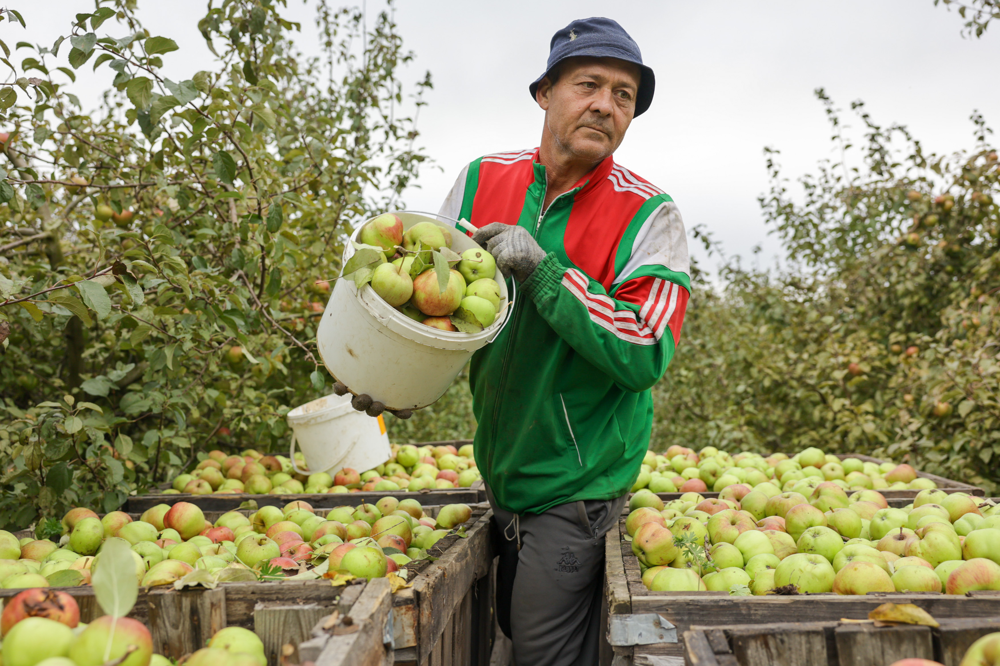
Впрочем, даже хороший сад не застрахован от непогоды. Позапрошлой осенью хозяйство собрало тысячу тонн яблок, а прошлой — всего 60. Во время цветения две ночи подряд температура опускалась до минус десяти градусов. Мороз повредил цветки, и урожая почти не было.
Нынешней весной прогноз снова заставил садоводов беспокоиться. Подготовили тракторы и прицепы, ездили между рядами, окуривали посадки дымом. На этот раз температура опускалась до минус четырёх градусов.
«110 гектаров не согреешь, как теплицу. При минус десяти помочь деревьям почти нечем. А в этот раз мороз был слабее, и мы сделали всё, что могли. Лучше попробовать, чем просто ждать утра».
Теперь в хозяйстве оценивают результат по убранным сортам. На данный момент урожайность составляет около 60 тонн с гектара. Это столько же, сколько после прошлогодних заморозков собрали со всего сада. Общий урожай может превысить тысячу тонн, хотя окончательные цифры станут известны только после завершения уборки.
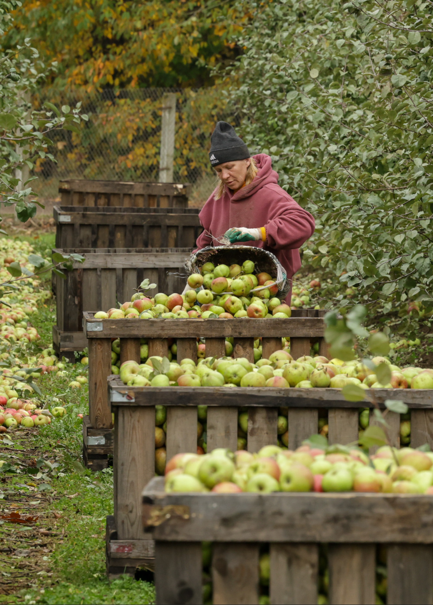
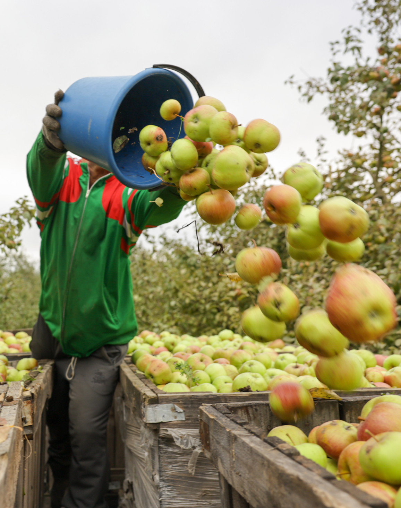
Вырастить –
мало
После уборки яблоки отправляются на хранение и в торговые сети. «Бугагроинвест» реализует урожай преимущественно на белорусском рынке. Осенью яблок много не только в этом хозяйстве, поэтому часть урожая не спешат отправлять в торговые сети. Плоды закладывают на хранение, чтобы продавать зимой и весной, когда местных яблок станет меньше.
Пока «Бугагроинвест» пользуется фруктохранилищем соседнего ОАО «Остромечево». Рядом со своим садом хозяйство строит собственное — с регулируемой газовой средой. В таких условиях, по словам руководителя, яблоки смогут храниться до мая – июня.
«Когда сажаешь первые гектары, думаешь прежде всего о том, как вырастить яблоки. А потом оказывается, что собрать урожай — ещё не конец работы. Если хочешь продавать его не только осенью, нужно хранилище. К своему мы шли почти 15 лет».
Но на хранение отправятся не все плоды. Уже во время уборки яблоки разделяют по размеру с помощью простого калибратора. Те, что помельче, хозяйство поставляет на Малоритский консервноовощесушильный комбинат на переработку.
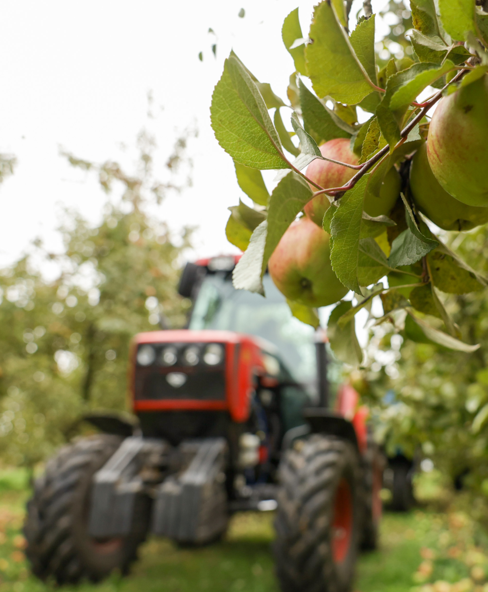
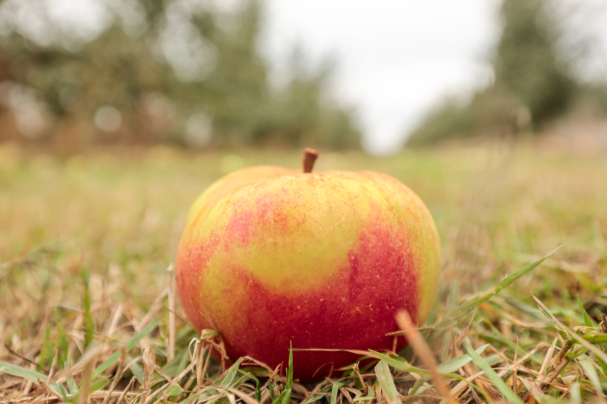
«Яблоко –
основа»
Клецкое предприятие «Гамма вкуса» из переработанных овощей, фруктов и ягод производит соки, пюре, фруктовые десерты и различную консервацию. Яблоко — ключевой ингредиент для детского ассортимента.
«Наша позиция, как производителя, такова: детки должны кушать то, что произрастает в той местности, где они родились. Яблоко — это первый фрукт, который вводят в прикорм. Повторюсь, именно фрукт, поскольку вводят и овощи. Поэтому, конечно, яблоко — основа нашего производства».
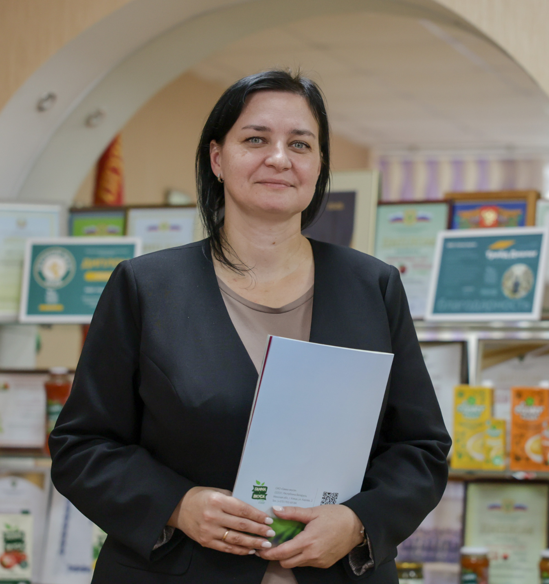
Мы выпускаем как монопюре, так и различные сочетания: яблоко с малиной, черникой, клюквой, киви, грушей, бананом и другими фруктами и ягодами. Линейка большая, сейчас готовим новинку с манго. Плюс мы купажируем яблоко с овощами, например тыква – банан – яблоко, кабачок – яблоко. Не всегда дети охотно едят овощи в чистом виде, а яблоко позволяет сделать вкус приятнее.
К детской продукции у нас в стране, как известно, очень серьёзные требования. И чтобы сырьевая база соответствовала всем стандартам, в 2011-м на предприятии решили заложить собственный сад.
«Мы единственный перерабатывающий завод, который самостоятельно выращивает для себя сырьё. Для детского питания важна кислотность яблок — она не должна быть выше 0,8 %. Этот показатель зависит от сорта, поэтому основная часть яблонь в саду — „белорусское сладкое“. Это отечественный сорт, плоды которого имеют низкую кислотность и высокое содержание растворимых сухих веществ».
Универсальный
полуфабрикат
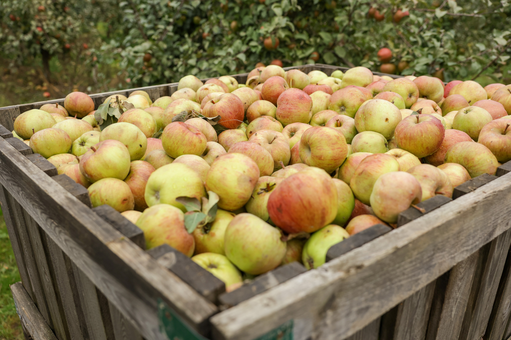
Своими яблоками завод закрывает около 30 % от всей потребности. Остальное закупают у фермеров, сельхозорганизаций и у населения. Правда, перед тем как отправить эти партии плодов на переработку, их проверяют в собственной аккредитованной лаборатории.
«Основной показатель, который нас интересует, это сухие вещества и кислотность. От этого зависит, на производство какой продукции плоды пойдут».
Поскольку у завода нет хранилища, то яблоки стараются как можно быстрее переработать в пюре-полуфабрикат. В последующем из него делают детское питание, соки или продают другим предприятиям, например кондитерским.
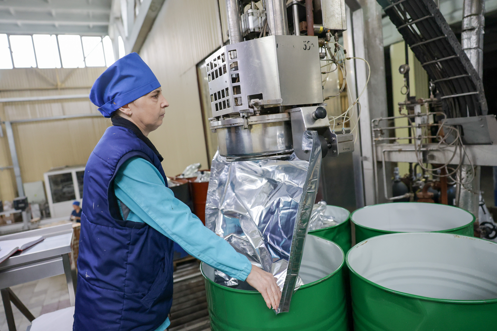
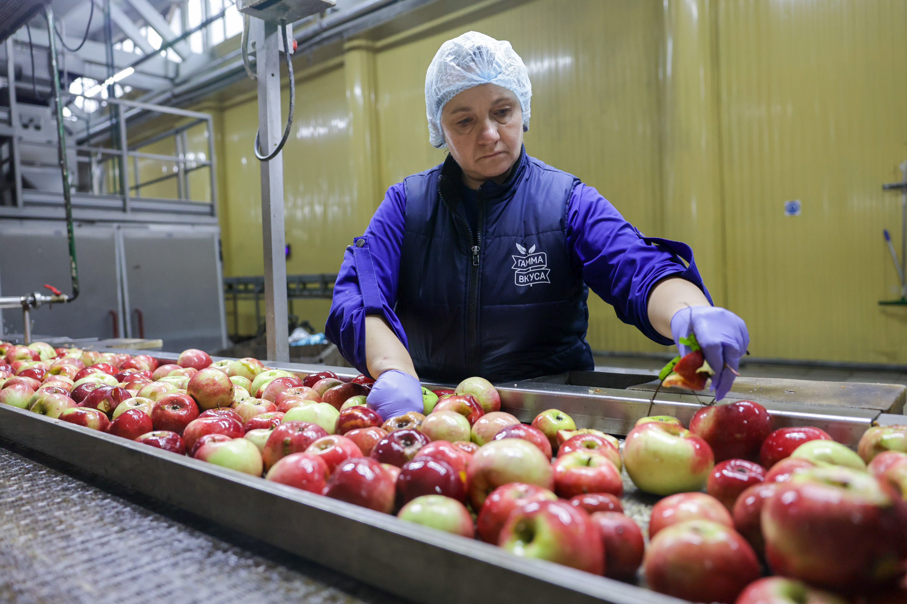
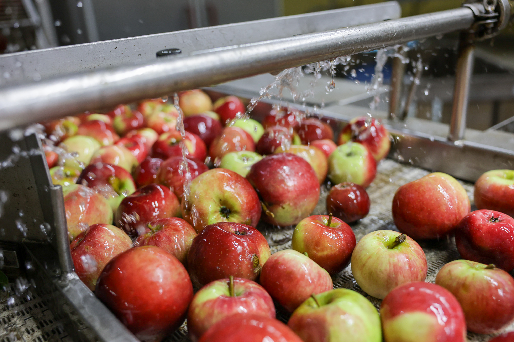
По всем
канонам
Пока на заводе активно перерабатывают яблоки нового урожая, в саду продолжается сбор. Яблони здесь занимают 137 гектаров, остальные 20 — делят между собой смородина, крыжовник, малина. Есть здесь и свой питомник, где на смену старым деревьям растят молодые.
Помимо «белорусского сладкого» здесь растёт ещё 15 сортов. Среди них как отечественные, так и зарубежные: «Дарунок», «алеся», «антоновка», «чемпион», «лигол», «хани крисп», «глостер», «найдаред» и другие. В этом году урожай богатый, в среднем с четырёх яблонь собирают по 300 килограммов. В лучшие годы за сезон было 950 тонн, сейчас идут на рекорд — на данный момент уже почти 1200 тонн, и это ещё не всё. По прогнозам агронома, выйдут на полторы тысячи тонн.
И поскольку здешнее яблоко — основа для детского питания, то и обработка деревьев проводится щадящая и только биологическими препаратами. Упор делается на внесение микроэлементов и витаминов, необходимых для полноценного роста и развития яблонь.
Собирайте красные яблоки за 3 сек. Коричневые не трогайте — минус очки!